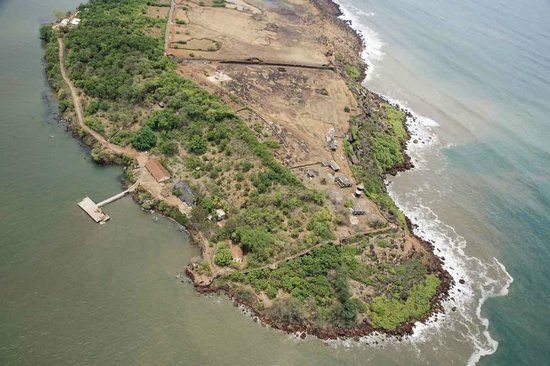
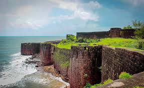
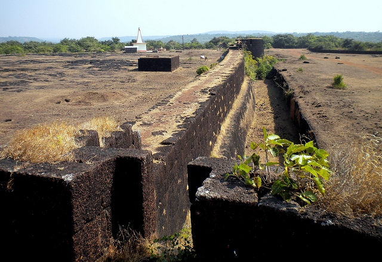

देवगड किल्ला
Location : Click Here For Google Map
- माहिती
- देवगड किल्ला महाराष्ट्र राज्याच्या सिंधुदुर्ग जिल्ह्यात स्थित एक ऐतिहासिक किल्ला आहे. किल्ला विशेषत: त्याच्या भव्यतेसाठी, समुद्राकडील स्थान आणि ऐतिहासिक महत्त्वासाठी प्रसिद्ध आहे. देवगड किल्ला समुद्र किनाऱ्यावर वसलेला असून, त्याच्या शिखरावरून समुद्राचे आणि आसपासच्या सुंदर परिसराचे अप्रतिम दृश्य दिसते.
किल्ल्याच्या स्थापत्य रचनेत बुरुज, तटबंदी आणि दरवाजे आहेत, जे किल्ल्याच्या ऐतिहासिक महत्त्वाचे प्रतीक आहेत. किल्ल्याचा इतिहास समुद्राच्या व्यापारी मार्गाशी संबंधित आहे, आणि त्याच्या संरक्षणासाठी हा किल्ला वापरण्यात आले होते. किल्ल्याच्या आसपासच्या परिसरात लहान चढाईचे मार्ग आहेत, जे पर्यटकांना अनुभवण्यास आकर्षक ठरतात.
देवगड किल्ल्याला समुद्रकिनाऱ्याच्या नजदीक असलेले पर्यटन स्थळ म्हणून देखील प्रसिद्ध आहे. किल्ल्याच्या शिखरावर चढून त्याच्या ऐतिहासिकतेचा अनुभव घेणे, तसेच समुद्र आणि निसर्ग सौंदर्याचे दृश्य पाहणे एक रोमांचक आणि अनमोल अनुभव आहे.
Explore the historical beauty


